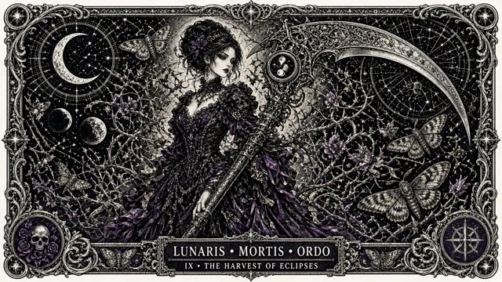

Coolcat
AI ART / PROMPTS
作品
人像
UI
关于
@minaoneday ↗
COOLCAT / GALLERY
#哥特
4 件相关作品
粉黑哥特街头 Pastel Goth Street
2026-09-27 · #粉黑 #哥特
哥特花房读诗 Gothic Greenhouse Reading
2026-09-27 · #哥特 #浪漫

铜版画月之收割者 Engraved Moon Reaper Card
2026-09-27 · #铜版画 #哥特
银色短发哥特黑白人像 Silver Pixie Goth Portrait
2026-09-27 · #黑白 #哥特